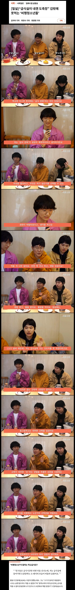

(비행청소년 = 비건 행동 청소년)
지난 2021년부터 국가인권위원회가 학교 및 군대에서 채식 급식을 제공하라고 몇 차례 권고했으나,
5년이 지난 2026년 올해 1월23일부터 시행된 군기본 급식법과 8월 20일부터 시행된 학교급식법 제 11조에도
'채식주의자를 위한 대체 식단 제공 의무'가 추가되지 않은 점이 비판받고 있다고 함~

(비행청소년 = 비건 행동 청소년)
지난 2021년부터 국가인권위원회가 학교 및 군대에서 채식 급식을 제공하라고 몇 차례 권고했으나,
5년이 지난 2026년 올해 1월23일부터 시행된 군기본 급식법과 8월 20일부터 시행된 학교급식법 제 11조에도
'채식주의자를 위한 대체 식단 제공 의무'가 추가되지 않은 점이 비판받고 있다고 함~
담당일찐 없냐
도시락 가져오면 되잖아
나도 육식주의자니까 고기로 가득채워
남자야 여자야?
처먹지마 새끼야 도시락을 쳐싸오세요
어이가없네 ㅋㅋ
느그들 식단 따로 챙겨주는 어마어마한 돈과 급식실 아주머니의 노동증가가 폭력이야
이런쪽 사람들은 말할때 입꼬리가 비슷함
통쾌했어요 스타일인데
살짝 비웃음을 띄우면서 굉장한 발견과 경험을 했고 내가 그것을 너희들에게 공유해주고 있는것이다 이 모순과 진리를 알아라 라는 표정을 항상 지으면서 말함
이거 씹인정
딱 중간에
“먹을게 너무 없어요” 부분 ㅋㅋㅋ
ㅋㅋㅋㅋㅋㅋ
턱 살짝 드는 단계까지 올라간 애들도 있음 ㅋㅋㅋㅋㅋ
배가 불러서 그래..
비건은 정신병으로 분류했으면 좋겠다
비건들은 왜 항상 특별대우를 받으려고함?
따로 예산투자하게 압박해서 자기 입맛에만 맞는 음식을
먹으려는 행동은 너무 폭력적이고 강압적으로 느껴짐
아 좆나 짜증난다 진짜…..ㅋㅋㅋㅋㅋㅋㅋㅋ
비건도시락 싸가면 되는거 아님?
도시락이나 싸들고 다녀라
니들때문에 배로 일해야하는 분들은 생각안하냐?
쳐굶어 새끼야
도시락을 쳐 싸고다녀
비건하는새끼들끼리 급식비 수십배 더내고 비건식을 해달라하던가
마인드가 좆슬람새끼들이 우리나라와서 먹을거없다는거랑 다를게없네
담당일진들 이 개 씨발새끼들아 뭐하냐?
도축장은 ㅋㅋㅋ 서양에서 하니까 힙한거 들여왔다고 하지만 정작 서양에선 한식이 비건 천국 식단이라고 하는데 언제부터 급식에 프로틴이 그렇게 많았냐 야채가 훨 많지
저분들도 앞에 디저트로 봐서 유제품정도는 드시는거 같은데 급식에 먹을게 적다고 할 정도의 빡센 비건은 아닌거 같은데 급식에 반찬 두세개는 다 야채식단 아닌가 고기국도 자주 나오는거도 아닌데
본인이 지키고자 하는 신념이 있으면 식단표 보고 도시락이라도 싸가서 저항하는 “행동“ 있어야하는데 늘상 해오던대로 회피하고 흐린눈 하는식으로 해결함 결국 고른 행동은 그냥 안먹기 운동장 앉아있기임 결국 행동은 없고 누군가 허락해준 비거니즘만 남은 상태의 삶임
본인이 비건 식단에 대한 연구를 하거나 뭔가
개선책을 내놓는 ”행동“ 은 없고 그냥 비건짱 급식은 도축장이에요 로 끝남
육식주의자를 위한 제육을 매일 내놔라!
도시락 싸들고 댕기라고 그러면ㅋㅋㅋㅋㅋㅋㅋㅋㅋㅋ
그럼 도시락을 싸댕겨 씨발.
k-툰베리
도시락 싸갖고 다녀라
옛날같았으면 저런 소리 하면 진작에 밥주걱으로 쳐맞아서 이렇게 언론에 뜨지도 않았음
배고프면 도시락 싸
근데 진짜 비건, 페미 하는 애들은 왜 다 저러냐? ㅋㅋㅋㅋㅋㅋㅋㅋㅋㅋㅋㅋ
본인이 힘쓰는건 싫고 ㅋㅋ 해줘~~
도시락싸... 왜 해달라고만하냐
불편하면 자세를 고쳐 앉으란 말 처럼
본인의 소신댜로 행동하려면 "해 줘"가 아니라
도시락 싸들고 다녀야지
도시락은 장식인가 부모님 뭐하노
뭐 채식 식단 가능하면 좋지만 현실적으로 힘들지. 군대같이 도시락이라는 옵션이 아예 불가능한 것도 아니라서 어쩔 수 없지. 본인이 도시락 싸오는 게 답임. 예전에 동국대는 불교재단 학교라서 채식당이 있긴 했었음. 근데 일반적인 중고등학교 급식실에서는 현재 상황에서 여건이 어렵긴 하지.
나 알바로 학교 급식실 한학기(3개월) 대체 뛴적있거든
저런 개좆같은 소리 할거면 급식실에서 일해보고 했으면 좋겠음
개 씨 발 뒤 지 게 힘 들 어
매일매일이 자살마려웟음
근데 이걸 궂이 욕할필요가 있나?....기내식도 비건식, 할랄식 다 있고 걍 개인의 신념 문제인데....빠듯하고 열악하게 급식실을 굴리는 행정의 문제임....해외에서 열명일할거 한국은 대여섯명에게 주는걸 아직도 하고있는디.
이런거 볼때마다 인권위는 왜 있는 기관인가 싶음
학교애들 진짜 착한가부다
건강에만 문제 없다면 비건 해도 좋고 사회적으로도 점점 비건 접근성 높아지면 좋지 특히 기후위기 관련해서도
비건 한명은 고기먹는사람보다 1인당 연간 1.5톤정도의 탄소 적게 배출함
내연기관 승용차로 6000km 주행할때 나오는 탄소량임
특히 소고기가 온실가스 개많이뿜음
비건은 솔직히 현실적으로 쉽지않으니까 소 대신 가끔 닭 먹고 가끔 채식으로만 꾸려도 식품 탄소 배출 엄청 줄음
치킨 맛있으니까 치킨 마이먹어라 소 한번 먹을돈이면 치킨 두세번 먹는다
가정교육에 문제 있는 애들이 편식 많이 하더라
진짜 생긴게 죄다 비건 잘하게 생김 ㅋㅋㅋㅋ
선진국이 됐다는 증거임ㅋㅋㅋㅋ 즐겨 ㅋㅋㅋㅋㅋㅋ
본인은 비건하고 거리가 먼 사람이지만, 저 사람들의 취향이 그런 걸 뭐라할 수가 있나? 자유사회에서 본인 이익을 위해 목소리 내는 것 또한 자유고, 합당한 이유에 의해 들어주지 않으면 그걸로 끝인 거잖아.
굳이 쟤네들이 인신공격이나 비난을 받을 필요는 없는 거 같은데ㅋㅋㅋ
맞어. 이런 문제에 달리는 댓글들보면 너무 이상하게 극도로 적대적임.....
그러면 급식먹지말고 엄마한테 뻰또 싸달라 그래라
친구들 근육붙고 키 클때 풀떼기 먹어서 키안크고 나중에 후회하는건 개인의 몫이다
나도 급식에 맨날 고기만 주지 왜 육식+탄수주의자인 나한테 야채를 강요하는지 어이없더라